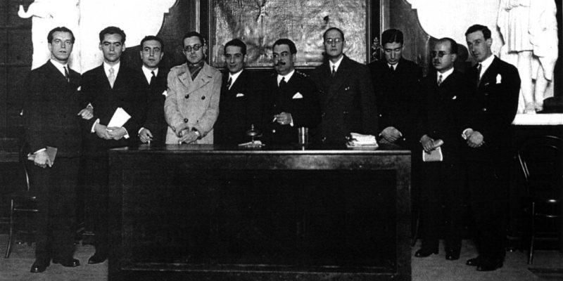

Se conoce como Generación del 27 a un movimiento que tuvo lugar en España en el 1927 en el que autores y artistas comenzaron a cultivar una serie de estética e ideología que cumplía características muy parecidas.
Además, también se considera como una generación ya que la gran mayoría de los participantes en ella eran amigos y formaban parte del mismo grupo de intelectuales.
Con la muerte de Federico García Lorca en el 1936 se dio por terminada esta generación.
Una de las características de la Generación del 27 más importantes es que los autores que englobaron sus filas habían nacido todos en la misma generación y, por tanto, tenían edades similares e ideologías parecidas.
No escribían solamente por el mero placer artístico si no que también lo hacían para comunicar, como medio de expresión y de denuncia social. Las obras creadas por los autores pueden verse como una protesta de toda una generación de personas que nacieron y vivieron en una época concreta de la historia de España.
Los autores tenían una mentalidad progresista del arte. Querían encontrar nuevas formas literarias y nuevas expresiones para poder darle un aire nuevo a las letras y renovarlas.
Los autores de la Generación del 27 se unieron a la corriente literaria del vanguardismo, uno de los movimientos más rompedores e innovadores del arte. Está formado por lo que se ha bautizado como los "ismos" artísticos, es decir, corrientes e ideologías como el surrealismo, impresionismo, expresionismo, futurismo, cubismo, etcétera.
Los autores rompieron con toda norma para crear una nueva manera de hacer arte. Los literatos escribían con total libertad, tanto a nivel métrico como estilístico.
Los miembros de esta generación apostaban por una literatura renovada pero que se basara en la tradición. Por eso, se fijaron en autores propios del Siglo de Oro como fue Góngora, Quevedo, Garcilaso de la Vega y Lope de Vega. Basándose en estos clásicos, crearon nuevos estilos que se mezclaban con las diferentes ideologías vanguardistas para crear una nueva literatura.
Los más destacados son: